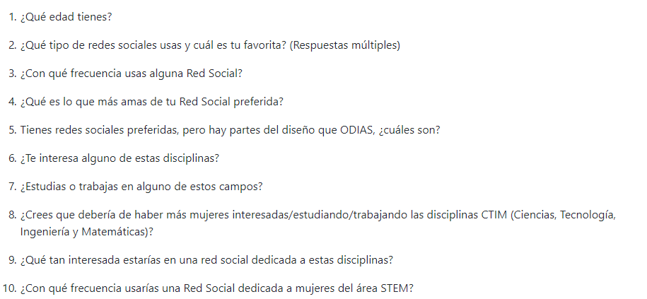
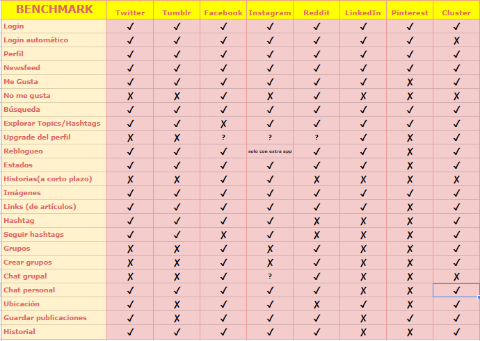
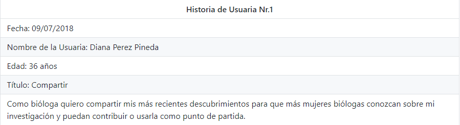
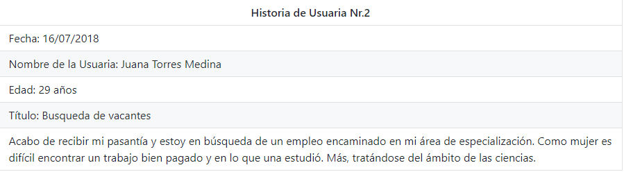
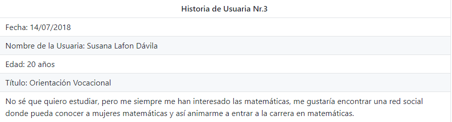
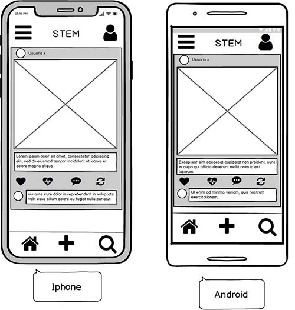
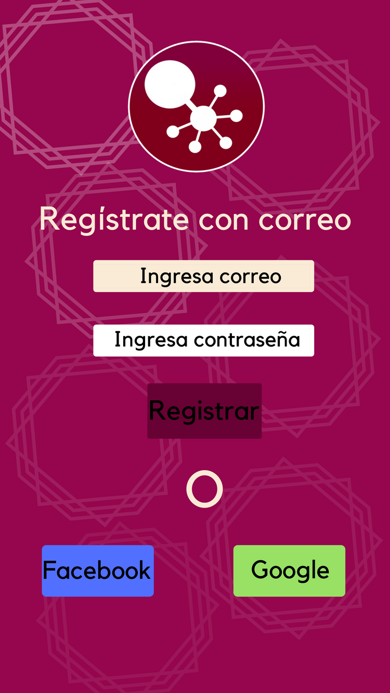
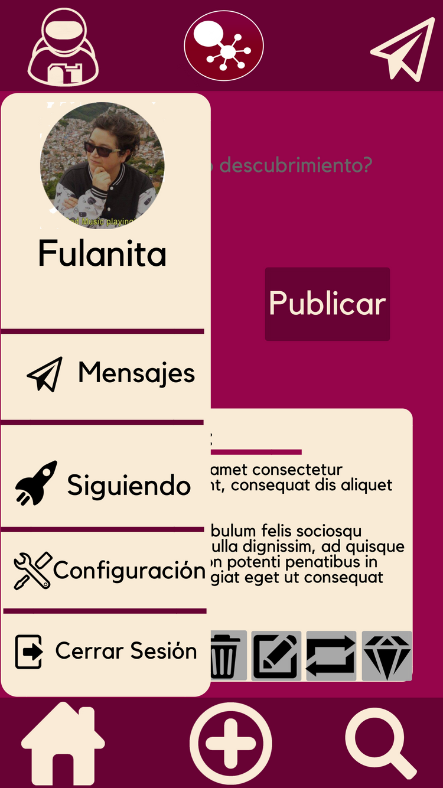

Introducción:

Según la investigación de Microsoft "Closing The STEM Gap” hecha en 2017, encontró varios puntos por los cuales las mujeres deciden alejarse de las ciencias: Las mujeres pierden el interés por carreras relacionadas con las CTIM cuando crecen, por ejemplo, al 31% de las niñas de escuela primaria encuestadas les atrae la programación, pero al momento que ingresan a la universidad el porcentaje desciende a casi el 20%.
Con esto en menten decidimos crear una plataforma pensando en atraer más mujeres al mundo de las CTIM. Para esto realizamos encuentas on-line con 100 personas y con los insights que sacamos fue que empezamos a hacer los primeros prototipos de la interfaz de este proyecto.
Cliente:
Este fue un trabajo realizado en el bootcamp intensivo con especialización en UX, Laboratoria.
Mi papel:
UX Research, UI Designer y Front end.
Problema:
Actualmente los espacios para que las mujeres interesadas en las CTIM puedan juntarse para discutir ideas o dudas sobre estos temas. Por lo que decidimos crear esta red social para atacar este problema.
Acciones:
Para este proyecto se inició con un research, posteriormente un prototipo de baja fidelidad y por último uno de baja fidelidad.
Mi contribución:
En este proyecto me hice cargo de la parte del research, la parte del prototipado y el front-end.
Proceso
Para esta investigación decidimos acercarnos a los siguientes métodos de investigación:

Research
Recently, the US Federal government banned online casinos from operating in America by making it illegal to transfer money to them through any US bank or payment system. As a result of this law, most of the popular online casino networks such as Party Gaming and PlayTech left the United States. Overnight, online casino players found themselves being chased by the Federal government. But, after a fortnight, the online casino industry came up with a solution and new online casinos started taking root. These began to operate under a different business umbrella, and by doing that, rendered the transfer of money to and from them legal. A major part of this was enlisting electronic banking systems that would accept this new clarification and start doing business with me. Listed in this article are the electronic banking systems that accept players from the United States that wish to play in online casinos.
Encuestas
La encuesta tuvo respuesta de 100 mujeres, cuyo promedio de edad es de 30 años, siendo las chicas entre 25 y 30 años las que más participaron.
De las entrevistadas el 95% tiene a Facebook como su red social favorita, seguida de Youtube con el 76% e Instagram con el 70%.
Las encuestas reflejaron que la mayoría de las mujeres son muy activas en sus redes sociales, pues el 95% de las encuestadas entran varias veces al día a sus redes sociales y solo el 5% interactúan poco.
Una de las preguntas más importantes que se les hizo a las usuarias fue relacionada a las cosas que más les gustan de sus redes sociales favoritas. Las respuestas fueron bastante variadas, pero poder compartir imágenes fue la que tuvo mayor peso con el 45% de respuestas recibidas; le siguió “poder estar en grupos de interés” con el 40% y “seguir páginas” con el 38%; las respuestas que menos fueron tomadas en cuenta por las encuestados fueron “encontrar cosas por # (hashtag) con 13%, “poder escoger otras reacciones aparte del me gusta” con el 13% y “explorar la sección de sugerencias” con un 8%.
Metiéndonos en la parte de los Paint points referente a las redes sociales preferidas de nuestras encuestadas nos dimos cuenta que el tener que descargar una app aparte para poder tener acceso a una funcionalidad en particular es algo que no le parece a la mayoría de nuestras encuestadas (66%); seguido de la existencia de tantos botones ya que el 49% de las encuestadas votaron por esto.
Por último la encuesta arrojó que aunque la mayoría (60%) no trabaja en CTIM; hay un interés genuino por estos tema, siendo que el 80% de las encuestadas contestó positivo al preguntarles sobre si les interesan los temas relacionados a las CTIM.
Benchmark
Recently, the US Federal government banned online casinos from operating in America by making it illegal to transfer money to them through any US bank or payment system. As a result of this law, most of the popular online casino networks such as Party Gaming and PlayTech left the United States. Overnight, online casino players found themselves being chased by the Federal government. But, after a fortnight, the online casino industry came up with a solution and new online casinos started taking root. These began to operate under a different business umbrella, and by doing that, rendered the transfer of money to and from them legal. A major part of this was enlisting electronic banking systems that would accept this new clarification and start doing business with me. Listed in this article are the electronic banking systems that accept players from the United States that wish to play in online casinos.
Historias de usuarios
  Recently, the US Federal government banned online casinos from operating in America by making it illegal to transfer money to them through any US bank or payment system. As a result of this law, most of the popular online casino networks such as Party Gaming and PlayTech left the United States. Overnight, online casino players found themselves being chased by the Federal government. But, after a fortnight, the online casino industry came up with a solution and new online casinos started taking root. These began to operate under a different business umbrella, and by doing that, rendered the transfer of money to and from them legal. A major part of this was enlisting electronic banking systems that would accept this new clarification and start doing business with me. Listed in this article are the electronic banking systems that accept players from the United States that wish to play in online casinos.
Prototipos de baja fidelidad
Recently, the US Federal government banned online casinos from operating in America by making it illegal to transfer money to them through any US bank or payment system. As a result of this law, most of the popular online casino networks such as Party Gaming and PlayTech left the United States. Overnight, online casino players found themselves being chased by the Federal government. But, after a fortnight, the online casino industry came up with a solution and new online casinos started taking root. These began to operate under a different business umbrella, and by doing that, rendered the transfer of money to and from them legal. A major part of this was enlisting electronic banking systems that would accept this new clarification and start doing business with me. Listed in this article are the electronic banking systems that accept players from the United States that wish to play in online casinos.
Prototipos de alta fidelidad
 Recently, the US Federal government banned online casinos from operating in America by making it illegal to transfer money to them through any US bank or payment system. As a result of this law, most of the popular online casino networks such as Party Gaming and PlayTech left the United States. Overnight, online casino players found themselves being chased by the Federal government. But, after a fortnight, the online casino industry came up with a solution and new online casinos started taking root. These began to operate under a different business umbrella, and by doing that, rendered the transfer of money to and from them legal. A major part of this was enlisting electronic banking systems that would accept this new clarification and start doing business with me. Listed in this article are the electronic banking systems that accept players from the United States that wish to play in online casinos.